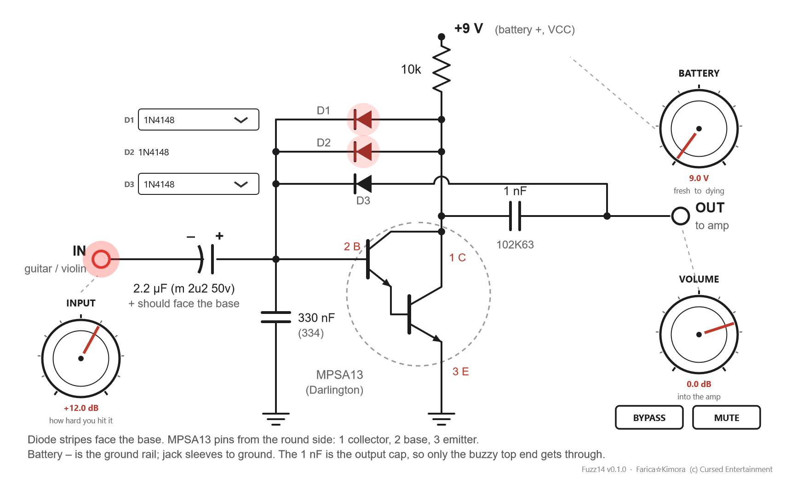
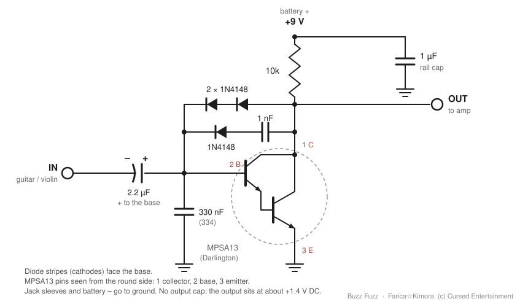

INPUT
How hard your instrument hits the circuit. It only fuzzes when it's hit hard: for a voice through a mic, try +18 dB. The IN jack glows as you drive it.
a 2014 breadboard fuzz, simulated part by part
One MPSA13 transistor, three 1N4148 diodes and a 1 nF cap, put together on a breadboard in 2014 by adding diodes until it sounded right.
Fuzz14 doesn't imitate how it sounds. It solves the circuit, every part, every sample, the way SPICE would. Turn the battery down and the bias really sags. Pull a diode out and the circuit really changes.
free · Windows 10/11 64-bit · VST3 + standalone app (ASIO) · v0.1.0

How hard your instrument hits the circuit. It only fuzzes when it's hit hard: for a voice through a mic, try +18 dB. The IN jack glows as you drive it.
A fresh 9 V down to a dying 6 V, with the internal resistance climbing as it goes.
What reaches the amp.
Swap the diode in those spots while you play. D2 stays a 1N4148: it keeps the transistor biased.
True bypass, lined up with the pedal so it doesn't jump; and silence for tuning. Both fade in 20 ms: no clicks.
Sixteen to choose from. What matters is how much voltage a diode needs before it starts to conduct: the lower it is, the earlier it clips. Pick one to see its curve against the original 1N4148.
A synthetic plucked low E, then an A chord, rendered offline through the plugin. Not a real recording, yet.

A one-transistor fuzz in the Bazz Fuss family. The two diodes side by side bias the Darlington and squash the signal; the 1 nF on the output lets only the top end through, which is where the buzz comes from; the third diode clips the peaks back into the base.
Fuzz14.exe.Fuzz14.vst3 to C:\Program Files\Common Files\VST3.The files aren't code-signed, so SmartScreen may warn you. Click More info > Run anyway. Only download it from this page or the GitHub release.